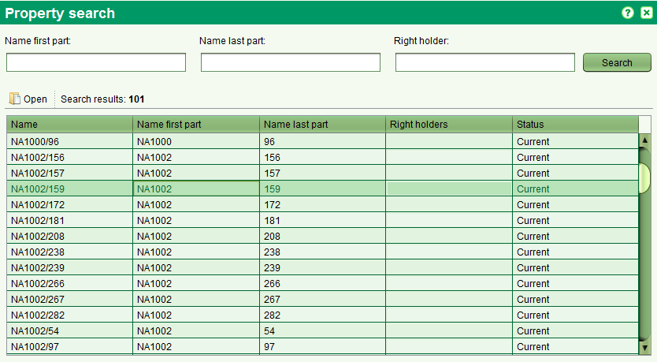

L'écran de recherche de propriété permet de trouver des propriété pour l'édition et la visualisation.
On peut y accèder par le menu Recherche > Recherche Propriété ou en sélectionnant 

Il est possible de chercher par une combinaison de nom, prénom d'une partie ou d'un détenteur de droit.
Ces champs appuyent une correspondance totale ou partielle des éléments de recherche.
Pour visualiser les détails d'une propriété, sélectionner la propriété dans la liste des résultats de recherche et cliquer le bouton d'ouverture

Voir aussi